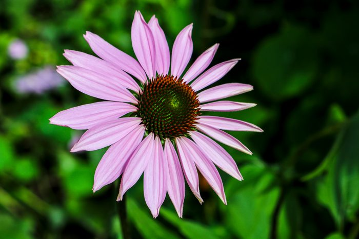
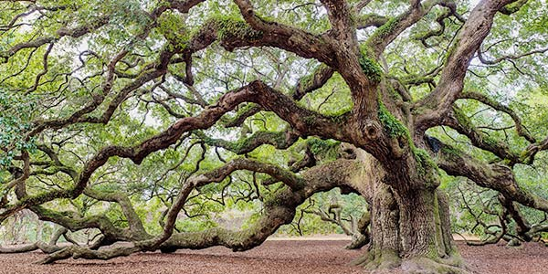
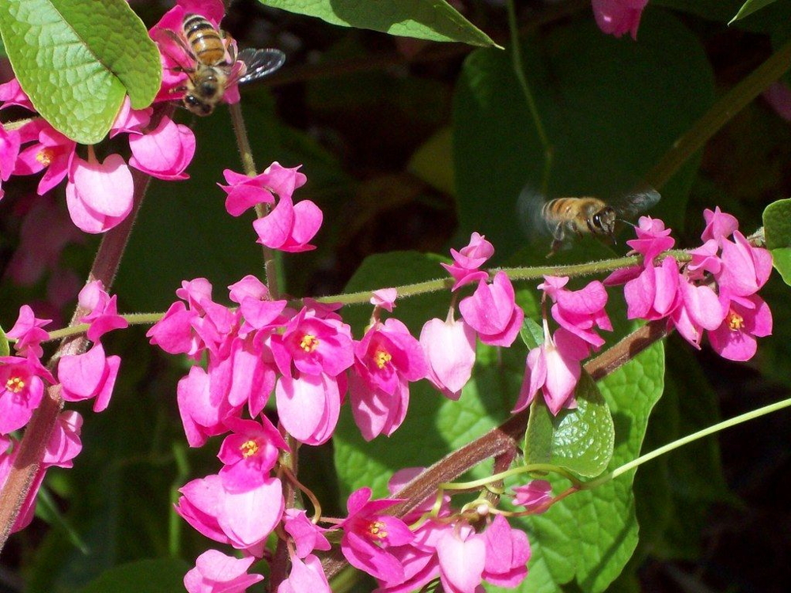
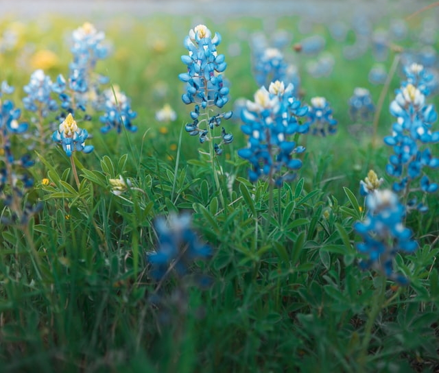

Rudbeckia hirta, commonly called black-eyed Susan, is a North American flowering plant in the sunflower family, native to Eastern and Central North America and naturalized in the Western part of the continent as well as in China.
Black-eyed Susan (Rudbeckia fulgida ‘Goldsturm’) This perennial coneflower has cheerful golden yellow flowers with black centers that offer long-lasting continual blooms. A drought tolerant perennial with large blooms up to 5 inches across that make great cut flowers. A sure winner for a Houston garden.This native prairie biennial forms a rosette of leaves the first year, followed by flowers the second year. It is covered with hairs that give it a slightly rough texture.

Eastern Purple Coneflower (Echinacea purpurea) Drought tolerant native that is a butterfly magnet. Profuse blooms spring through summer. Elongated stems with soft lavender petals attached to an iridescent cone. It prefers full sun to partial shade in well draining fertile soils. 2-5 feet tall. Perfect for cut flowers, lasting about a week. Native. Outstanding performer in the garden.
The genus name is from the Greek echino, meaning hedgehog, an allusion to the spiny, brownish central disk. The flowers of Echinacea species are used to make an extremely popular herbal tea, purported to help strengthen the immune system; an extract is also available in tablet or liquid form in pharmacies and health food stores. Often cultivated, Purple Coneflower is a showy, easily grown garden plant.

Live Oaks are native to Texas and grow throughout central Texas from Oklahoma to the Gulf Coast. Live Oak are beautiful trees with wide spreading canopies that have horizontal arching branches that tend to dip to the ground.
Quercus fusiformis is an evergreen tree in the white oak section of the genus Quercus. It is distinguished from Quercus virginiana (southern live oak) most easily by the acorns, which are slightly larger and with a more pointed apex. It is also a smaller tree, not exceeding 1 meter (40 inches) in trunk diameter (compared to 2.5 m (75 inches) in diameter in southern live oak), with more erect branching and a less wide crown. Like Q. virginiana, its magnificent, stately form and unparalleled longevity has endeared it to generations of residents where it is native.

Queen’s wreath, also known as coral vine, is a beautiful, sun-loving vine that can also take a little shade. A great addition to any wall or trellis, it can easily spread to 20 feet wide and, with good support, twice as high. You might spot it even climbing up telephone poles or other urban structures! It grows very quickly, making it a nice choice to cover up a bare wall or block an unsightly view. But this rapid growth can be challenging to keep in check, so coral vine is sometimes labeled aggressive, and is best avoided in landscapes adjacent to natural areas.
Because of its rambling habit, Queen’s wreath should be given plenty of space to roam. Although it may be deciduous in warmer winters, it’s more often perennial in Central Texas.

Bluebonnet is a name given to any number of purple-flowered species of the genus Lupinus predominantly found in southwestern United States and is collectively the state flower of Texas. The shape of the petals on the flower resembles the bonnet worn by pioneer women to shield them from the sun.
Texas lupine has larger, more sharply pointed leaves and more numerous flower heads than similar lupines. Light-green, velvety, palmately compound leaves (usually five leaflets) are borne from branching, 6-18 in. stems. These stems are topped by clusters of up to 50 fragrant, blue, pea-like flowers. The tip of the cluster is conspicuously white. This was the original State Flower of Texas, named so by the Texas Legislature in 1901. The Lupinus subcarnosus has a slightly more muted color scheme and tends to have less densely-packed flower petals, giving it a more sparse, willowy look. You’ll find this variety of bluebonnet in south central Texas, especially prominent in Hidalgo County. It was unseated as the official state flower in 1971, when the legislature conglomerated all varieties of the lupine into one, generic Texas Bluebonnet, becoming the official state flower.